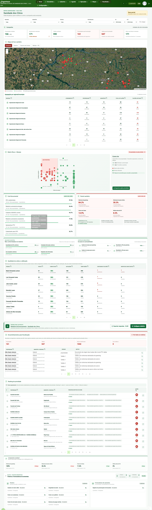
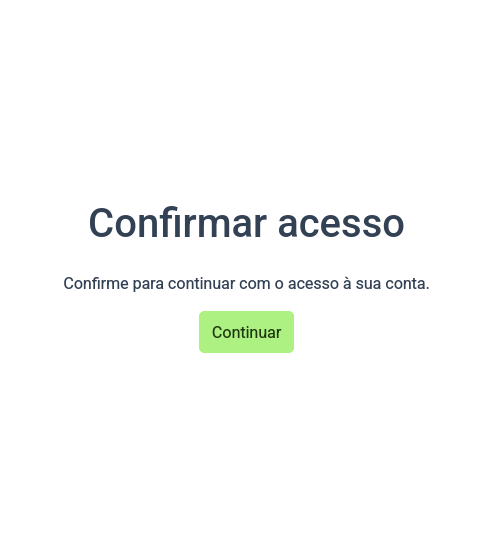
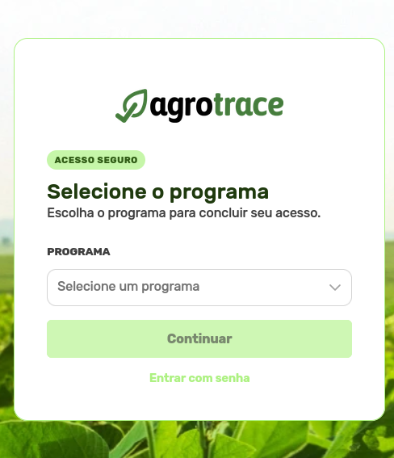
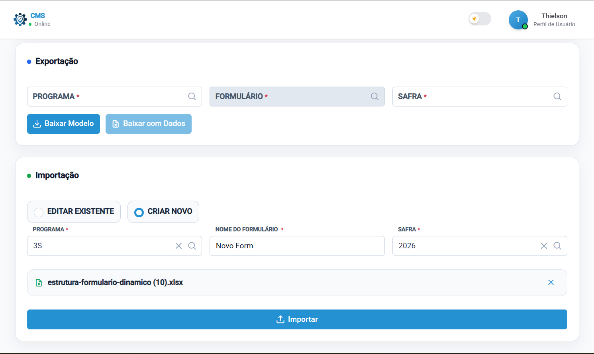
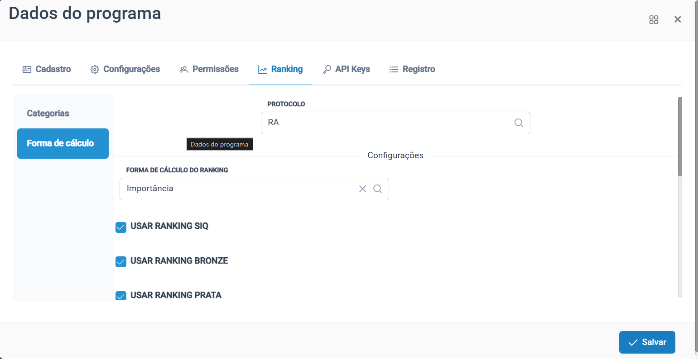

Da coleta
ao uso.
Dados que viram decisão, estruturas que ganham portabilidade e acesso com menos atrito.
Três histórias. 30 minutos.
O perfil do período
Dados que orientam ação
Citros, evolução Agroplus e ranking aproximaram coleta, leitura e priorização.
Menos recadastro
Formulário Dinâmico, importações e relatórios avançaram em reuso e portabilidade.
Acesso com mais controle
API Keys, passwordless, sessões pareadas, MFA e banimento evoluíram como uma jornada única.
Base para continuar evoluindo
Procedures, migrations resilientes, correções de relatórios e autenticação sustentaram as entregas.
// 34 cards numerados únicos entre 06/07 e 23/07 · entregas sem card (fluxo MFA, relatórios Checkmilk, migrations) não contadas
Não são novos dados.
É uma nova leitura.
Os dados já existiam em relatórios e dashboards dinâmicos. O salto foi deixar de entregá-los de forma genérica e transformá-los em informação rica, específica e acionável para a Sanidade dos Citros.
Entender o domínio → organizar a narrativa dos dados → destacar decisão e prioridade → replicar a abordagem em outros projetos.
Dados existentes → informação específica do negócio

Menos atrito para entrar.
Mais rigor por baixo.
Remover a senha não remove controles: desloca a segurança para um fluxo mais inteligente, recuperável e observável.
Passwordless + hardening de sessões


Um formulário complexo,
agora portável.
Um formulário não é uma lista de perguntas. É uma árvore de relações que precisa continuar íntegra ao sair de um ambiente.
📚 7 famílias de abas
Estrutura, formulário, agrupadores, perguntas, listas, itens e domínios.
🔗 Códigos estáveis
Vínculos reconstruíveis sem depender dos IDs locais do banco.
♻️ Reuso entre contextos
Base para replicar estruturas com menos recadastro e menos erro.
Exportação funcional · importação como próximo passo

A medalha deixou de ser global.
Agora respeita o protocolo.
A mesma certificadora pode operar protocolos com critérios diferentes. A configuração de ranking precisou sair do escopo geral do programa e passar a carregar, salvar e calcular por protocolo.
🎛️ Seleção explícita
Dropdown na aba Ranking carrega a configuração correta e evita editar faixas do protocolo errado.
🧬 Modelo por vínculo
Configuração e categorias da certificadora ganharam relacionamento com protocolo para preservar nomes, faixas e uso das medalhas.
⚙️ Cálculo alinhado
Procedures, functions, views e relatórios passaram a consultar o protocolo no ranking de diagnóstico, acompanhamento e pontuação.
Ranking de medalhas por protocolo

O que ficou — e o que vem agora
Decisão operacional
Citros conectou cobertura, risco, qualidade, fiscalização e encerramento.
Segurança como jornada
API Keys, passwordless, sessões e banimento evoluíram de forma coordenada.
Plataforma reutilizável
Formulários, blocos repetíveis, relatórios e Excel avançaram em portabilidade.
[ ] concluir importação da estrutura do Formulário Dinâmico @thielson
[ ] ampliar o padrão de informação rica do Citros para outros projetos @ronaldo
Complexidade próxima
do resultado.
Dados viraram decisão. O acesso ficou mais simples. Estruturas complexas começaram a ganhar portabilidade.